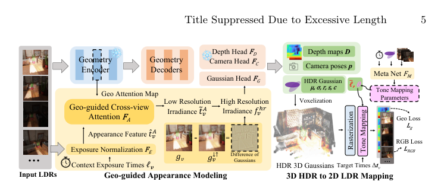
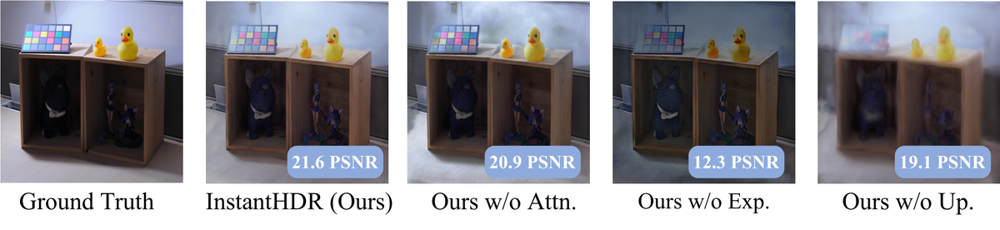

InstantHDR：用于高动态范围 3D 重建的单向高斯溅射
简单摘要
高动态范围（HDR）新视角合成旨在从多曝光低动态范围（LDR）图像重建HDR场景。现有HDR管线严重依赖已知的相机位姿、良好初始化的稠密点云以及耗时的逐场景优化。当前的前馈替代方法假设外观对曝光不变，完全忽略了HDR问题。前馈方法在单次前向传播中完成重建的效率和泛化能力与HDR场景中多曝光融合的复杂性之间存在显著鸿沟。此外，HDR场景数据的匮乏也制约了可泛化前馈HDR模型的发展。本文提出InstantHDR，首个从前馈视角解决HDR新视角合成的方法：设计了几何引导的外观建模，在3D空间中实现多曝光融合；提出元网络用于场景特定的色调映射，使模型适配不同相机响应函数。为支持训练，构建了HDR-Pretrain预训练数据集，包含168个Blender渲染场景，为可泛化前馈HDR模型提供了标准化的训练基准。
 图 1
图 1核心创新
1. 提出首个前馈式HDR新视角合成框架InstantHDR，单次前向传播即可从未标定的多曝光LDR图像重建3D HDR场景。
2. 设计几何引导的外观建模机制，在3D空间中实现多曝光融合，充分利用场景的几何结构信息。
3. 提出元网络实现场景特定的通用色调映射，使单个模型适配不同的相机响应函数。
4. 构建HDR-Pretrain预训练数据集，填补了前馈HDR训练数据的空白。
技术细节

架构图：方法整体流程InstantHDR的核心目标是从未经标定的、不同曝光下捕获的多视图LDR图像中，一次性重建HDR 3D高斯泼溅，并可渲染任意目标曝光下的新视图。其管道由三个关键组成部分构成：几何分支（提供结构基础）、基于几何引导的外观建模模块（Geo-guided Appearance Modeling，核心贡献）、以及3D HDR到2D LDR的色调映射模块。
问题形式化：给定未标定的多视图N张LDR上下文图像{I_i}_{i=1}^N，每张对应已知曝光时间t_i（在对数曝光空间中定义e_i = log(t_i/t_ref)），InstantHDR联合重建：(a) HDR 3D高斯集合，每个高斯由中心位置μ、不透明度σ、朝向四元数q、各向异性缩放s、以及对数辐亮度的d阶球谐系数编码的HDR颜色嵌入参数化；(b) 逐视图相机参数π_i = {f, R, T, pp}；(c) 场景级属性：中间曝光锚点μ_exp（参考曝光水平），以及轻量色调映射器参数（近似场景特定的相机响应函数CRF）。
几何分支：采用预训练的交替注意力Transformer作为几何主干（遵循VGGT和AnySplat的设计）。每张图像通过DINOv2分块化为维度d的token，加上可学习相机token和4个寄存器token。来自所有视图的合并token通过L层交替注意力Transformer处理，每层应用逐帧自注意力后接全局跨视图注意力。相机位姿和深度图的专用解码器头与几何编码器一起在训练全程冻结。
几何引导的外观建模模块（Geo-guided Appearance Modeling）：这是解决曝光引起的外观不一致问题的核心，分为三阶段：
(1) 曝光归一化（Exposure Normalization）：为融合多曝光视图，首先消除曝光导致的亮度变化，将所有外观特征对齐到共享参考水平。定义每张视图的相对对数曝光：Δe_i = e_i - μ_exp（μ_exp为中间曝光锚点），通过正弦位置编码映射为维度d的嵌入。同时使用独立的分块编码器从每张LDR图像提取外观token。FiLM层预测逐视图仿射参数：γ_i, β_i = FiLM(PE(Δe_i), z)，其中z为全局场景摘要。外观token被调制：T_i' = γ_i ⊙ T_i + β_i。注意该方法直接在相机输出的LDR图像（通常为gamma编码）上操作，无需先通过逆gamma校正线性化，因为训练目标直接重建多曝光LDR图像而非线性HDR辐亮度。
(2) 几何引导的跨视图注意力（Geo-guided Cross-view Attention）：不同曝光捕获互补信息——亮曝光揭示暗部细节而暗曝光保留高光。融合需要跨视图对应关系，而在大视角和曝光变化下这具有挑战性。关键观察：冻结的几何编码器中的全局注意力图已经编码了可靠的跨视图几何对应关系（实验表明树叶、杯具、门框、镜子等元素在极端曝光变化下仍能准确匹配）。将这些注意力图重用于引导外观融合：在外观分支的跨视图注意力层中，使用几何分支对应层的注意力分数作为偏置或门控信号。
(3) 高分辨率上采样（High-Resolution Upsampling）：辐亮度特征工作在patch分辨率（丢失高频细节）。为恢复像素级纹理同时保留融合的低频辐亮度，采用高斯差分（DoG）引导的上采样策略。首先通过浅层CNN将每张全分辨率LDR图像编码为特征图F_hr。低通版本F_lp通过下采样再双线性上采样获得。高频残差R_hf = F_hr - F_lp。将该残差加到双线性上采样的辐亮度特征上：F_pixel = Upsample(F_irradiance) + R_hf，实现多视图辐亮度共识与逐图像结构细节的结合。
高斯头：将几何分支token通过DPT解码器上采样到像素分辨率后与辐亮度特征相加，轻量CNN回归逐高斯的不透明度、朝向、缩放和对数辐亮度球谐颜色。高斯中心通过将预测深度图经过估计相机位姿反投影获得。随后体素化以降低基元计数实现高效泼溅。
3D HDR到2D LDR色调映射：给定HDR 3D高斯，渲染逼真LDR视图需要恢复将场景辐亮度映射到观测像素值的相机响应函数（CRF）。不同于优化式方法对每个场景训练MLP色调映射器，InstantHDR通过Meta Net从场景上下文预测轻量色调映射器的参数，实现泛化而不需要逐场景优化。两步转换：(1) 高斯泼溅在视图v处以线性辐亮度空间光栅化逐像素HDR图像：I_v^HDR = Rasterizer(G_HDR, π_v)，其中log-radiance球谐颜色在混合前转换回线性辐亮度；(2) 采用对数域CRF模型，学习得到的色调映射器将log-辐亮度映射为LDR值：I_v^LDR = T_meta(log(I_v^HDR) + (e_target - μ_exp))，其中e_target为目标对数曝光，μ_exp为中间曝光锚点，(e_target - μ_exp)项将辐亮度调整到期望曝光水平。T为两层MLP（输入:1 隐藏:64 ReLU 输出:1 sigmoid），作为可学习的逆CRF。Meta Net从场景级特征预测T的参数，使模型适应不同相机和色调曲线。
训练策略：使用重建损失L = L_LDR(I^LDR_pred, I^LDR_gt)在LDR域监督，结合L1和SSIM损失。几何分支冻结，仅训练外观模块和高斯头。
实验结论
现有的基准仅包含少数场景，远远不足以进行大规模预训练。我们主要在 HDR-NeRF 基准上进行评估，其中包含 8 个合成场景和 4 个真实室内场景，每个场景都是从 35 个视点、5 个曝光级别捕获的。为了清楚起见，我们报告了所有 5 种暴露的平均 LDR 指标，而不是区分观察到的 (LDR-OE) 和新颖的 (LDR-NE) 暴露。
在真实场景中具有挑战性的 4 视图稀疏设置下，InstantHDR 实现了 22.16 dB PSNR 和 0.762 SSIM，分别超过 GaussianHDR +2.90 dB 和 +0。AnySplat 在曝光变化方面表现不佳，而 GaussianHDR 则很耗时。我们的 InstantHDR 可以很好地推广到合成场景和真实场景，在几秒钟内渲染干净、曝光可控的 LDR 视图，并在 1K 后期优化后实现具有竞争力的质量。
| Dataset | Source | #Scenes | Type | HDR GT | Multi-Exp. | Depth/Normal | |||||||
|---|---|---|---|---|---|---|---|---|---|---|---|---|---|
| HDR-NeRF | Blender + Real | 8 + 4 | Object/Indoor | — | (5) | — | |||||||
| HDR-Plenoxels | Blender + Real | 5 + 4 | Indoor | — | (3) | — | |||||||
| Pano-NeRF | Blender + Replica + Real | 5 + 8 + 3 | Indoor (Pano.) | — | (9) | — | |||||||
| PanDORA | Real capture (360^) | 14 | Indoor (Pano.) | — | (2) | — | |||||||
| HDR-Pretrain (Ours) | Blender | 168 | Indoor | — | (5) | — | |||||||
| Mode | Method | 4 Views | 8 Views | 18 Views | |||||||||
|---|---|---|---|---|---|---|---|---|---|---|---|---|---|
| — | — | PSNR | SSIM | LPIPS | Time(s) | PSNR | SSIM | LPIPS | Time(s) | PSNR | SSIM | LPIPS | Time(s) |
| HDR-NeRF Real Dataset | |||||||||||||
| Zero-shot | AnySplat | 12.10 | 0.517 | 0.497 | 0.973 | 13.30 | 0.569 | 0.436 | 1.180 | 13.91 | 0.600 | 0.403 | 2.139 |
| — | InstantHDR (Ours) | 18.44 | 0.721 | 0.269 | 1.033 | 18.95 | 0.724 | 0.269 | 1.582 | 19.48 | 0.745 | 0.257 | 2.512 |
| Optimization | HDR-GS | 15.40 | 0.622 | 0.334 | 872 | 23.02 | 0.791 | 0.121 | 736 | 27.42 | 0.893 | 0.047 | 815 |
| — | GaussianHDR | 19.26 | 0.691 | 0.270 | 1833 | 24.96 | 0.854 | 0.068 | 1816 | 29.36 | 0.929 | 0.024 | 1891 |
| — | AnySplat_1K | 11.84 | 0.486 | 0.468 | 30 | 13.63 | 0.580 | 0.372 | 33 | 14.86 | 0.689 | 0.266 | 40 |
| — | InstantHDR_1K (Ours) | 22.16 | 0.762 | 0.259 | 32 | 25.32 | 0.852 | 0.160 | 40 | 29.19 | 0.931 | 0.086 | 39 |
| HDR-NeRF Syn Dataset | |||||||||||||
| 0.9 tabularcl 6c1111(a) HDR Comparision on HDR-NeRF syn scenes. | — | ||||
|---|---|---|---|---|---|
| Mode | Method | PSNR | SSIM | LPIPS | Time(s) |
| Zero-shot | AnySplat | 8.93 | 0.595 | 0.416 | 1.180 |
| — | InstantHDR (Ours) | 15.29 | 0.772 | 0.140 | 1.582 |
| Optimization | HDR-GS | 27.69 | 0.871 | 0.090 | 736 |
| — | GaussianHDR | 31.62 | 0.887 | 0.037 | 1816 |
| — | AnySplat_1K | 9.52 | 0.678 | 0.268 | 33 |
| — | InstantHDR_1K (Ours) | 27.55 | 0.899 | 0.076 | 40 |
4.2 定性结果
AnySplat 在曝光变化方面表现不佳，而 GaussianHDR 则很耗时。我们的 InstantHDR 可以很好地推广到合成场景和真实场景，在几秒钟内渲染干净、曝光可控的 LDR 视图，并在 1K 后期优化后实现具有竞争力的质量。前馈模型（AnySplat 和 InstantHDR）

如果把这篇论文放回问题背景里看，它真正的价值在于：高动态范围 (HDR) 新视图合成 (NVS) 旨在从多重曝光低动态范围 (LDR) 图像重建 HDR 场景。这说明作者不是只补一个局部模块，而是在重新组织问题该怎样被解决。
最能支撑这个判断的，还是实验给出的证据：当前的前馈替代方案通过假设曝光不变的外观而忽略了 HDR 问题。换句话说，这些设计并不只是概念上更完整，而是实实在在改变了最终结果。
当然，它离真正成熟的方案还有距离：当前方案的主要局限在于它仍然受到计算资源、输入质量或场景复杂度的约束，离真正大规模稳定部署还有距离。后续更值得继续推进的方向，是 未来继续提升效率、泛化能力以及在更复杂场景下的稳定性。